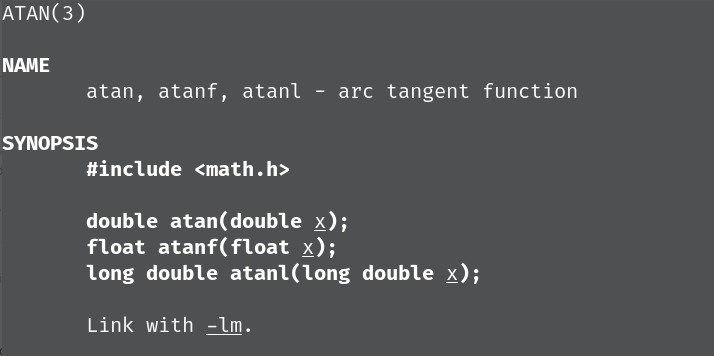
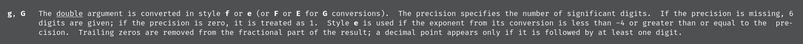

白给周报 1-types-io
条评论视角：Tilnel
小心匿名处刑
同步发布于 blog
[toc]
Ascii
非常和平的签到题，一点问题都没有。
Change
贪心思想，先用最大的，直到用不了再换小一点的…
看到 std 的做法，突发脑溢血：
1 | printf("%d\n%d\n%d\n%d\n", n / 20, (n % 20) / 10, ((n % 20) % 10) / 5, (((n % 20) % 10) % 5)); |
直接 n % 5 不好吗，为什么要 (((n % 20) % 10) % 5) …
更脑溢血的写法：从 0 张 20 元开始，用 for 循环一张一张累加，直到超了，换成 10 元继续累加…
这份代码的作者处理 10 元的时候还弄错了，导致 1 元必须累加到超过
INT_MAX变成某个负数才能停止循环，于是时间超限了。
Equation
==重灾区==
主要问题：爆完 int 爆 long long。因为 a, c 在 int 范围，故有可能出现 $4 \times a \times c$ 也超过了 int64_t 范围的情况。解决办法是全都用 double。
double 的精度是十进制的15位左右，本题求一个小数点后 3 位只能说是绰绰有余。
白给示例：

Gray
提交通过率达到惊人的 56.3%
Inverse
这题数据出锅了，后来题面补了前导零的描述。
Pi
最大的问题是有人不使用百度，直接在代码里写：
1 | double pi_1 = 16 * arctan(0.2) - 4 * arctan(1.0 / 239); |
然后非常自然地得到了
1 | pi.c: In function ‘main’: |
但是又不会看 warning，其实编译器已经问你是不是 atan 了。
第二个问题还是 数据类型溢出。
当你在 C 里写下：
1
a = 640320 * 640320 * 640320;
时，640320 被自动认为是
int类型。而这整个乘法算式的 3 个数字都是int类型，所以表达式的结果也将会是int类型。显然是装不下的。但凡写出一个
640320.0，这个计算的性质就变了：根据 类型提升规则，因为 640320.0 的类型是
double，所以它参与的运算的结果也被提升成了double类型。
什么时候不提升：
1 | int a = 2147483648; |
由于运算优先级的关系，这里首先执行 a * a，两者都是 int 类型，于是得出了一个溢出的 int 类型结果，再与 1.0 相加（而不是先被提升成 double 类型再相乘。
白给示范
1 |
|
输出结果：
1 | 3.141592741012573 |
为什么差这么多？

double 的精度比起 float 不知道高到哪里去了。。。
Planck
错误点比较集中，许多同学误用 %.3g ，但这个输出格式：
- 并不都输出科学计数法
- 还会砍末尾 0 造成有效数字位数不对
手册描述为证：
1 | man 3 printf |

double 类型的参数会以 f 或 e 格式输出。数字指定有效数字位数，默认 6 位；如果指定 0 为，则输出 1 位。如果指数 < -4 或 >= 精度则以 e 格式输出。分数部分的结尾 0 会被移除。小数点只会在其后至少跟随 1 位数字时出现。
正确的做法：使用 %.2e
Time
常见错：没有把题目指定的所有输出格式都实现，可能是因为年份前补 0 会显得非常奇怪。
奇怪错误1：strncpy 并不自动添加字符串末尾 0，字符串又开小了，导致字符串全连在一起。示例代码：
1 |
|
运行结果：

以下讲解看不懂也没关系：
函数执行的时候，局部变量占用的是栈区内存。而栈区内存的使用是从高地址向低地址。所以先创建的变量就排在后创建变量的后面。
比如我们假定栈的空间是从（十六进制） 0x100 开始，那么定义了 char weekday[10] 后，它占用 10 字节，于是我们往前推 10，weekday 字符串的起始位置就是 0x100 - 10 = 0xf6。
定义 char w[3] 则 w 的起始位置是 0xf3。
此时内存的状态是这样的，空格代表内容未知：
1 | | | | | | | | | | | | | | | | |
读入了 weekday 之后，则是：
1 | | | | | S | u | n | d | a | y |\0 | | | | | |
在进行了 strncpy 之后，由于 strncpy 没有添加末尾 \0 的行为，则变成：
1 | | S | u | n | S | u | n | d | a | y |\0 | | | | | |
而对于 printf 来说，判断一个字符串结束的方式是遇 \0 则停止。于是输出了 ‘SunSunday’ 这样的结果。
为了避免，我们只要：
- 定义 w[4]，留出末尾 0 的空间
- 手动设置 w[3] = 0
关于字符串的末尾 0，在第二周的作业中出现的错误则更是重量级。
Weekday
提交通过率最低的一题，仅 18.3%。
这题有我们的失误，一是一开始数据出错了，二是我们假定了年份是 4 位数的。对于 3 位数年份，前两位则不是 Y / 100 了。
主要的问题是看漏题目的一个条件导致运算错误。
常出现的错误：
1 | int w = ...; // a long formula |
这里注意到了条件，试图解决，但解得不是很决。w += 7 后，w 依然可能是负数。那么 w % 7 就依然是负数。
重量级代码
足足写了 4 KB

学计算机的目标就是让计算机替我们做事。这里完全可以写得更加简洁。比如 214、245 这种数字是根本不需要自己去计算的。
Quine
在排除了各种偷鸡写法之后，现在只能在已知的正确代码上修改才能得到一份 事实上错误 但 判题机答案正确 的代码。
具体的评测思路是：将你的 output 放到 .c 文件中，再编译运行一遍得到新的输出。这个新的输出应该与你的输出也保持一致。（你的代码正确的必要不充分条件）
这里贴出 Special Judge 的源码。欢迎有闲工夫的人想点别的花样来绕过这个评测，如果对这份代码理解上有问题请戳作者。
1 | /* Author: Tilnel |